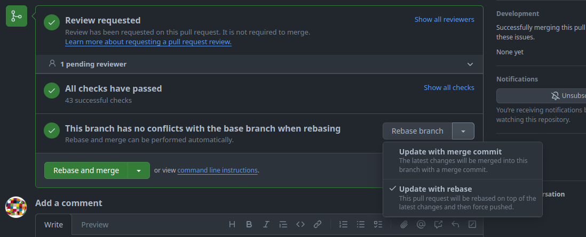
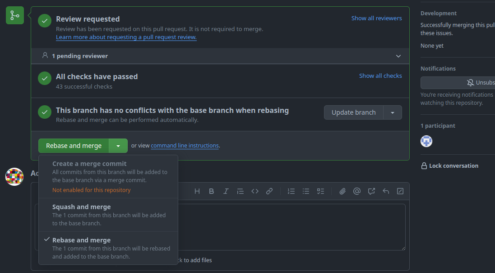
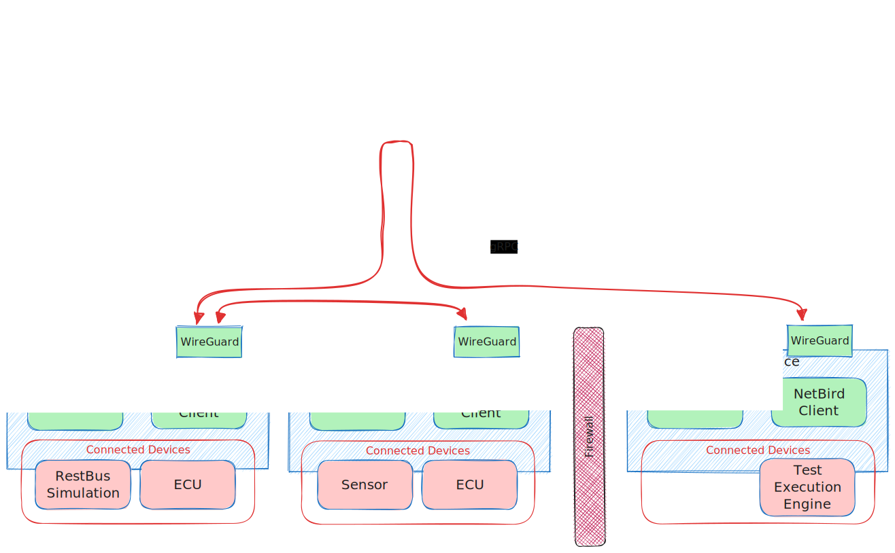

Eclipse openDuT
Eclipse openDuT provides an open framework to automate the testing and validation process for automotive software and applications in a reliable, repeatable and observable way. Eclipse openDuT is hardware-agnostic with respect to the execution environment and accompanies different hardware interfaces and standards regarding the usability of the framework. Thereby, it is supporting both on-premise installations and hosting in a cloud infrastructure. Eclipse openDuT considers an eventually distributed network of real (HIL) and virtual devices (SIL) under test. Eclipse openDuT reflects hardware capabilities and constraints along with the chosen test method. Test cases are not limited to a specific domain, but it especially realizes functional and explorative security tests.
User Manual
Learn how to use openDuT and its individual components.
User Manual for CLEO
CLEO is a CLI tool to create/read/update/delete resources in CARL.
By using a terminal you'll be able to configure your resources via CLEO.
CLEO can currently access the following resources:
- ClusterConfigurations
- ClusterDeployments
- Peers
- DuTs
Every resource can be created, listed, described and deleted. Some have additional features such as an option to generate a setup-key or search through them.
In general, CLEO offers a help command to display usage information about a command. Just use cleo help or cleo <subcommand> --help.
Commands
Listing resources
To list resources you can decide whether to display the resources in a table or in JSON-format.
The default output format is a table which is displayed by not using the --output flag.
cleo list --output=<format> <openDuT-resource>
Creating resources
To create resources it depends on the resource whether an ID or connected devices have to be added to the command.
cleo create <resource>
Generating PeerSetup Strings
To create a PeerSetup, providing the PeerID of the peer to be set up is necessary:
cleo generate-setup-key --id <PeerID>
Decoding Setup Strings
cleo decode --setup-string <String>
Describing resources
To describe a resource, their ID is to be provided. The output can be displayed via text or JSON-format.
cargo cleo describe --output=<output format> <resource> --id
Finding resources
Wildcards such as '*' can be used to find resources.
cleo find <resource> "<at least search criteria>"
Delete resources
cleo delete <resource> --id <ID of resource>
CLEO and jq
jq is a command-line-tool to pipe outputs from json into pretty json or extract values. That's how jq can automate cli-applications.
Basic jq
jq -r removes " from strings.
[] constructs array
object constructor: {} e.g. jq '[ { "name:" .[].name, "id:" .[].id } ]' or: jq '[ .[] | { title, name } ]'
input
cleo list --output=json peers
output
[
{
"name": "HelloPeer",
"id": "90dfc639-4b4a-4bbb-bad3-6f037fcde013",
"status": "Disconnected"
},
{
"name": "Edgar",
"id": "defe10bb-a12a-4ad9-b18e-8149099dd044",
"status": "Connected"
},
{
"name": "SecondPeer",
"id": "c3333d4e-9b1a-4db5-9bfa-7a0a40680f1a",
"status": "Disconnected"
}
]
input
cleo list --output=json peers | jq '[.[].name]'
output
jq extracts the names of every json element in the list of peers.
[
"HelloPeer",
"Edgar",
"SecondPeer"
]
can also be put into an array with cleo list --output=json peers | jq '[.[].name']
input
cleo list --output=json peers | jq '[.[] | select(.status=="Disconnected")]'
output
[
{
"name": "HelloPeer",
"id": "90dfc639-4b4a-4bbb-bad3-6f037fcde013",
"status": "Disconnected"
},
{
"name": "SecondPeer",
"id": "c3333d4e-9b1a-4db5-9bfa-7a0a40680f1a",
"status": "Disconnected"
}
]
input
cleo list --output=json peers | jq '.[] | select(.status=="Connected") | .id' | xargs -I{} cleo describe peer -i {}
output
Peer: Edgar
Id: defe10bb-a12a-4ad9-b18e-8149099dd044
Devices: [device-1, The Device, Another Device, Fubar Device, Lost Device]
to get the number of the peers
cleo list --output=json peers | jq 'length'
to sort peers by name
cleo list --output=json peers | jq 'sort_by(.name)'
Developer Manual
Learn how to get started, the workflow and tools we use, and what our architecture looks like.
Getting Started
Development Setup
Install the Rust toolchain: https://www.rust-lang.org/tools/install
You may need additional dependencies. On Ubuntu/Debian, these can be installed with:
sudo apt install build-essential pkg-config libssl-dev
To see if your development setup is generally working, you can run cargo ci check in the project directory.
Mind that this runs the unit tests and additional code checks and may occasionally show warnings/errors related to those, rather than pure build errors.
Tips & Tricks
-
cargo cicontains many utilities for development in general. -
To view this documentation fully rendered, run
cargo ci doc book open. -
To have your code validated more extensively, e.g. before publishing your changes, run
cargo ci check.
Starting Applications
- Run CARL (backend):
cargo carl
You can then open the UI by going to https://localhost:8080/ in your web browser.
-
Run CLEO (CLI for managing CARL):
cargo cleo -
Run EDGAR (edge software):
cargo edgar serviceMind that this is in a somewhat broken state and may be removed in the future,
as it's normally necessary to add the peer in CARL and then go throughedgar setup.
For a more realistic environment, see test-environment.
UI Development
Run cargo lea to continuously build the newest changes in the LEA codebase.
Then you can simply refresh your browser to see them.
Git Workflow
Pull requests
Update Branch
Our goal is to maintain a linear Git history. Therefore, we prefer git rebase over git merge1. The same applies when using the GitHub WebUI to update a PR's branch.

-
Update with merge commit:
The first option creates a merge commit to pull in the changes from the PR's target branch and this is against our goal of a linear history, so we do not use this option.
-
Update with rebase:
The second option rebases the changes of the feature branch on top of the PR's target branch. This is the preferred option we use.
Rebase and Merge
As said above, our goal is to maintain a linear Git history. A problem arises when we want to merge pull requests (PR), because the GitHub WebUI offers ineligible options to merge a branch:

-
Create a merge commit:
The first option creates a merge commit to pull in the changes from the PR's branch and this is against our goal of a linear history, so we disabled this option.
-
Squash and merge:
The second option squashes all commits in the PR into a single commit and adds it to the PR's target branch. With this option, it is not possible to keep all commits of the PR separately.
-
Rebase and merge:
The third option rebases the changes of the feature branch on top of the PR's target branch. This would be our preferred option, but "The rebase and merge behavior on GitHub deviates slightly from
git rebase. Rebase and merge on GitHub will always update the committer information and create new commit SHAs"2. This doubles the number of commits and spams the history unnecessarily. Therefore, we do not use this option either.
The only viable option for us is to rebase and merge the changes via the command line. The procedures slightly differ according to the location of the feature branch.
Feature branch within the same repository
This example illustrates the procedure to merge a feature branch fubar into a target branch development.
-
Update the target branch with the latest changes.
git pull --rebase origin development -
Switch to the feature branch.
git checkout fubar -
Rebase the changes of the feature branch on top of the target branch.
git rebase developmentThis is a good moment to run test and validation tasks locally to verify the changes.
-
Switch to the target branch.
git checkout development -
Merge the changes of the feature branch into the target branch.
git merge --ff-only fubarThe
--ff-onlyargument at this point is optional, because we rebased the feature branch and git automatically detects, that a fast-forward is possible. But this flag prevents a merge-commit, if we messed-up one of the previous steps. -
Push the changes.
git push origin development
Feature branch of a fork repository
This example illustrates the procedure to merge a feature branch foo from a fork bar of the user doe into a target branch development.
-
Update the target branch with the latest changes.
git pull --rebase origin development -
From the project repository, check out a new branch.
git checkout -b doe-foo development -
Pull in the changes from the fork.
git pull git@github.com:doe/bar.git foo -
Rebase the changes of the feature branch on top of the target branch.
git rebase developmentThis is a good moment to run test and validation tasks locally to verify the changes.
-
Switch to the target branch.
git checkout development -
Merge the changes of the feature branch into the target branch.
git merge --ff-only fubarThe
--ff-onlyargument at this point is optional, because we rebased the feature branch and git automatically detects, that a fast-forward is possible. But this flag prevents a merge-commit if we messed-up one of the previous steps. -
Push the changes.
git push origin development
Except git merge --ff-only.
Building a Release
To build release artifacts for distribution, run:
cargo ci distribution
The artifacts are placed under target/ci/distribution/.
Alternative platform
If you want to build artifacts for a different platform, use the following:
cargo ci distribution --target armv7-unknown-linux-gnueabihf
The currently supported target platforms are:
- x86_64-unknown-linux-gnu
- armv7-unknown-linux-gnueabihf
- aarch64-unknown-linux-gnu
Test Environment
openDuT can be tricky to test, as it needs to modify the operating system to function and supports networking in a distributed setup.
To aid in this, we offer a virtualized test environment for development.
This test environment is set up with the help of a command line tool called theo.
THEO stands for Test Harness Environment Operator.
It is recommended to start everything in a virtual machine, but you may also start the service on the host with docker compose if applicable.
Setup of the virtual machine is done with Vagrant, Virtualbox and Ansible.
The following services are included in docker:
- carl
- edgar
- firefox container for UI testing (accessible via http://localhost:3000)
- includes certificate authorities and is running in headless mode
- is running in same network as carl and edgar (working DNS resolution!)
- netbird
- keycloak
Operational modes
There are two ways of operation for the test environment:
Test mode
Run everything in Docker (Either on your host or preferable in a virtual machine). You may use the OpenDuT Browser to access the services. The OpenDuT Browser is a web browser running in a docker container in the same network as the other services. All certificates are pre-installed and the browser is running in headless mode. It is accessible from your host via http://localhost:3000.

Development mode
Run CARL on the host in your development environment of choice and the rest in Docker. In this case there is a proxy running in the docker environment. It works as a drop-in replacement for CARL in the docker environment, which is forwarding the traffic to CARL running in an integrated development environment on the host.

Getting started
Set up the virtual machine
Then you may start the test environment in the virtual machine.
- And use it in test mode
- Or use it in development mode.
There are some known issues with the test environment (most of them on Windows):
Start testing
Once you have set up and started the test environment, you may start testing the services.
User interface
The OpenDuT Browser is a web browser running in a docker container. It is based on KasmVNC base image which allows containerized desktop applications from a web browser. A port forwarding is in place to access the browser from your host. It has all the necessary certificates pre-installed and is running in headless mode. You may use this OpenDuT Browser to access the services.
- Open following address in your browser: http://localhost:3000
- Usernames for test environment:
- LEA: opendut:opendut
- Keycloak: admin:admin123456
- Netbird: netbird:netbird
- Services with user interface:
- https://carl
- https://netbird-dashboard
- https://keycloak
THEO Setup in Vagrant
You may run all the containers in a virtual machine, using Vagrant.
This is the recommended way to run the test environment.
It will create a private network (subnet 192.168.56.0/24).
The virtual machine itself has the IP address: 192.168.56.10.
The docker network has the IP subnet: 192.168.32.0/24.
Make sure those network addresses are not occupied or in conflict with other networks accessible from your machine.

Requirements
-
Install Vagrant
Ubuntu / Debian
sudo apt install vagrantOn most other Linux distributions, the package is called
vagrant. -
Install VirtualBox (see https://www.virtualbox.org)
sudo apt install virtualbox -
Create or check if an ssh key pair is present in
~/.ssh/id_rsamkdir -p ~/.ssh ssh-keygen -t rsa -b 4096 -C "opendut-vm" -f ~/.ssh/id_rsa
Setup virtual machine
- Either via cargo:
cargo theo vagrant up - Login to the virtual machine
cargo theo vagrant ssh
Warning Within the VM the rust target directory is overridden to
/home/vagrant/rust-targetto avoid hard linking issues. When running cargo within the VM, output will be placed in this directory!
-
Ensure a distribution of openDuT is present
- By either creating one yourself (on the host)
cargo ci distribution - Or by copying one to the target directory
target/ci/distribution/x86_64-unknown-linux-gnu/mkdir -p target/ci/distribution/x86_64-unknown-linux-gnu/
- By either creating one yourself (on the host)
-
Start test environment
cargo theo testenv start
Setup THEO on Windows
This guide will help you set up THEO on Windows.
Requirements
The following instructions use chocolatey to install the required software. If you don't have chocolatey installed, you can find the installation instructions here. You may also install the required software manually.
- Install vagrant and virtualbox
choco install -y vagrant virtualbox - Install git and configure git to respect line endings
choco install git.install --params "'/GitAndUnixToolsOnPath /WindowsTerminal /NoAutoCrlf'"
Warning If you already have installed git, you may need to reconfigure it to respect line endings. If you already have checked out the repository without this setting, you need to do it again.
-
Redo git configuration
git config --global core.autocrlf false -
Create or check if an ssh key pair is present in
~/.ssh/id_rsamkdir -p ~/.ssh ssh-keygen -t rsa -b 4096 -C "opendut-vm" -f ~/.ssh/id_rsa
Setup virtual machine
- Add the following environment variables to point vagrant to the vagrant file
export OPENDUT_REPO_ROOT=$(git rev-parse --show-toplevel) export VAGRANT_DOTFILE_PATH=$OPENDUT_REPO_ROOT/.vagrant export VAGRANT_VAGRANTFILE=$OPENDUT_REPO_ROOT/.ci/docker/Vagrantfile - Set up the vagrant box (following commands were tested in git-bash)
vagrant up
Info If the virtual machine is not allowed to create or use a private network you may disable it by setting the environment variable
OPENDUT_DISABLE_PRIVATE_NETWORK=true.
- Connect to the virtual machine via ssh (requires the environment variables)
vagrant ssh
Additional notes
You may want to configure a http proxy or a custom certificate authority. Details are in the Advance usage section.
THEO Setup in Docker
Requirements
-
Install Docker
Ubuntu / Debian
sudo apt install docker.ioOn most other Linux distributions, the package is called
docker. -
Install Docker Compose v2
Ubuntu / Debian
sudo apt install docker-compose-v2Alternatively, see https://docs.docker.com/compose/install/linux/.
-
Add your user into the
dockergroup, to be allowed to use Docker commands without root permissions. (Mind that this has security implications.)sudo groupadd docker # create `docker` group, if it does not exist sudo gpasswd --add $USER docker # add your user to the `docker` group newgrp docker # attempt to activate group without re-loginYou may need to log out your user account and log back in for this to take effect.
-
Create a distribution of openDuT
cargo ci distribution
- Start containers
cargo theo testenv start
- Start edgar cluster
cargo theo testenv edgar start
Use virtual machine for development

-
Start vagrant on host:
cargo theo vagrant up -
Connect to virtual machine from host:
cargo theo vagrant ssh -
Start developer test mode in opendut-vm:
cargo theo dev start -
Once keycloak and netbird are provisioned, generate run configuration for CARL in opendut-vm:
cargo theo dev carl-config- which should give an output similar to the following:
OPENDUT_CARL_NETWORK_REMOTE_HOST=carl
OPENDUT_CARL_NETWORK_REMOTE_PORT=443
OPENDUT_CARL_VPN_ENABLED=true
OPENDUT_CARL_VPN_KIND=netbird
OPENDUT_CARL_VPN_NETBIRD_URL=https://192.168.56.10/api
OPENDUT_CARL_VPN_NETBIRD_CA=<ca_certificate_filepath>
OPENDUT_CARL_VPN_NETBIRD_AUTH_SECRET=<dynamic_api_secret>
OPENDUT_CARL_VPN_NETBIRD_AUTH_TYPE=personal-access-token
OPENDUT_CARL_VPN_NETBIRD_AUTH_HEADER=Authorization
- You may also use the toml configuration (also printed from the
carl-configcommand) file in a special configuration file on your host at~/.config/opendut/carl/config.toml. - Use the environment variables in the run configuration for CARL
- Run CARL on the host:
cargo ci carl run - Run LEA on the host:
cargo ci lea run
- Run CARL on the host:
- Or start CARL in your IDE of choice and add the environment variables to the run configuration.
Use virtual machine for testing
This mode is used to test a distribution of OpenDuT.
-
Ensure a distribution of openDuT is present
- By either creating one yourself on your host:
cargo ci distribution - Or in the opendut-vm.
Within the VM the rust target directory is overridden to
/home/vagrant/rust-target. Therefore, you need the to copy the created distribution to the expected location.cargo ci distribution mkdir -p /vagrant/target/ci/distribution/x86_64-unknown-linux-gnu/ cp ~/rust-target/ci/distribution/x86_64-unknown-linux-gnu/* /vagrant/target/ci/distribution/x86_64-unknown-linux-gnu/ - Or by copying one to the target directory
target/ci/distribution/x86_64-unknown-linux-gnu/# ensure directory is present mkdir -p target/ci/distribution/x86_64-unknown-linux-gnu/ # copy distribution to target directory
- By either creating one yourself on your host:
-
Login to the virtual machine from your host (assumes you have already set up the virtual machine)
cargo theo vagrant ssh -
Start test environment in opendut-vm:
cargo theo testenv start -
Start a cluster in opendut-vm:
cargo theo testenv edgar startThis will start several EDGAR containers and create an OpenDuT cluster.
Known Issues
Copying data to and from the OpenDuT Browser
The OpenDuT Browser is a web browser running in a docker container. It is based on KasmVNC base image which allows containerized desktop applications from a web browser. When using the OpenDuT Browser, you may want to copy data to and from the OpenDuT browser inside your own browser. On Firefox this is restricted, and you may use the clipboard window on the left side of the OpenDuT Browser to copy data to your clipboard.
Cargo Target Directory
When running cargo tasks within the virtual machine, you may see following error:
warning: hard linking files in the incremental compilation cache failed. copying files instead. consider moving the cache directory to a file system which supports hard linking in session dir
This is mitigated by setting a different target directory for cargo in /home/vagrant/.bashrc on the virtual machine:
export CARGO_TARGET_DIR=$HOME/rust-target
Vagrant Permission Denied
Sometimes vagrant fails to insert the private key that was automatically generated. This might cause this error (seen in git-bash on Windows):
$ vagrant ssh
vagrant@127.0.0.1: Permission denied (publickey).
This can be fixed by overwriting the vagrant-generated key with the one inserted during provisioning:
cp ~/.ssh/id_rsa .vagrant/machines/opendut-vm/virtualbox/private_key
Vagrant Timeout
If the virtual machine is not allowed to create or use a private network it may cause a timeout during booting the virtual machine.
Timed out while waiting for the machine to boot. This means that
Vagrant was unable to communicate with the guest machine within
the configured ("config.vm.boot_timeout" value) time period.
- You may disable the private network by setting the environment variable
OPENDUT_DISABLE_PRIVATE_NETWORK=trueand explicitly halt and start the virtual machine again.
export OPENDUT_DISABLE_PRIVATE_NETWORK=true
vagrant halt
vagrant up
Vagrant Custom Certificate Authority
When running behind an intercepting http proxy, you may run into issues with SSL certificate verification.
ssl.SSLCertVerificationError: [SSL: CERTIFICATE_VERIFY_FAILED] certificate verify failed: self-signed certificate in certificate chain (_ssl.c:1007)
This can be mitigated by adding the custom certificate authority to the trust store of the virtual machine.
- Place certificate authority file here:
resources/development/tls/custom-ca.crt - And re-run the provisioning of the virtual machine.
export CUSTOM_ROOT_CA=resources/development/tls/custom-ca.pem
vagrant provision
Ctrl+C in Vagrant SSH
When using cargo theo vagrant ssh on Windows and pressing Ctrl+C to terminate a command, the ssh session may be closed.
Netbird management invalid credentials
If keycloak was re-provisioned after the netbird management server, the management server may not be able to authenticate with keycloak anymore.
# docker logs netbird-management-1
[...]
2024-02-14T09:51:57Z WARN management/server/account.go:1174: user 59896d1b-45e6-48bb-ae79-aa17d5a2af94 not found in IDP
2024-02-14T09:51:57Z ERRO management/server/http/middleware/access_control.go:46: failed to get user from claims: failed to get account with token claims user 59896d1b-45e6-48bb-ae79-aa17d5a2af94 not found in the IdP
docker logs edgar-leader
[...]
Failed to create new peer.
[...]
Received status code indicating an error: HTTP status client error (403 Forbidden) for url (http://netbird-management/api/groups)
This may be fixed by destroying the netbird service:
cargo theo testenv destroy --service netbird
Afterward you may restart the netbird service:
cargo theo testenv start
# or
cargo theo dev start
Advanced Usage
Run vagrant commands directly instead of through THEO:
- or directly via Vagrant's cli (bash commands run from the root of the repository):
export OPENDUT_REPO_ROOT=$(git rev-parse --show-toplevel) export VAGRANT_DOTFILE_PATH=$OPENDUT_REPO_ROOT/.vagrant export VAGRANT_VAGRANTFILE=$OPENDUT_REPO_ROOT/.ci/docker/Vagrantfile vagrant up - provision vagrant with desktop environment
ANSIBLE_SKIP_TAGS="" vagrant provision
Cross compile THEO for Windows on Linux
cross build --release --target x86_64-pc-windows-gnu --bin opendut-theo
# will place binary here
target/x86_64-pc-windows-gnu/release/opendut-theo.exe
Proxy configuration
In case you are working behind a http proxy, you need additional steps to get the test environment up and running.
The following steps pick up just before you start up the virtual machine with vagrant up.
A list of all domains used by the test environment is reflected in the proxy shell script:
.ci/docker/vagrant/proxy.sh.
It is important to note that the proxy address used shall be accessible from the host while provisioning and within
the virtual machine.
If you have a proxy server on your localhost you need to make this in two steps:
-
Use proxy on your localhost
- Configure vagrant to use the proxy localhost.
# proxy configuration script, adjust to your needs source .ci/docker/vagrant/proxy.sh http://localhost:3128 - Install proxy plugin for vagrant
vagrant plugin install vagrant-proxyconf - Then starting the VM without provisioning it.
This should create the vagrant network interface with network range 192.168.56.0/24.
vagrant up --no-provision
- Configure vagrant to use the proxy localhost.
-
Use proxy on private network address 192.168.56.1
- Make sure this address is allowing access to the internet:
curl --max-time 2 --connect-timeout 1 --proxy http://192.168.56.1:3128 google.de - Redo the proxy configuration using the address of the host within the virtual machine's private network:
# proxy configuration script, adjust to your needs source .ci/docker/vagrant/proxy.sh http://192.168.56.1:3128 - Reapply the configuration to the VM
$ vagrant up --provision Bringing machine 'opendut-vm' up with 'virtualbox' provider... ==> opendut-vm: Configuring proxy for Apt... ==> opendut-vm: Configuring proxy for Docker... ==> opendut-vm: Configuring proxy environment variables... ==> opendut-vm: Configuring proxy for Git... ==> opendut-vm: Machine not provisioned because `--no-provision` is specified.
- Make sure this address is allowing access to the internet:
-
Unset all proxy configuration for testing purposes (non-permanent setting in the shell)
unset http_proxy https_proxy no_proxy HTTP_PROXY HTTPS_PROXY NO_PROXY -
You may also set the docker proxy configuration in your environment manually:
~/.docker/config.json{ "proxies": { "default": { "httpProxy": "http://x.x.x.x:3128", "httpsProxy": "http://x.x.x.x:3128", "noProxy": "localhost,127.0.0.1,netbird-management,netbird-dashboard,netbird-signal,netbird-coturn,keycloak,edgar-leader,edgar-*,carl,192.168.0.0/16" } } }/etc/docker/daemon.json{ "proxies": { "http-proxy": "http://x.x.x.x:3128", "https-proxy": "http://x.x.x.x:3128", "no-proxy": "localhost,127.0.0.1,netbird-management,netbird-dashboard,netbird-signal,netbird-coturn,keycloak,edgar-leader,edgar-*,carl,192.168.0.0/16" } }
Custom root certificate authority
This section shall provide information on how to
provision the virtual machine when running behind an intercepting http proxy.
This is also used in the docker containers to trust the custom certificate authority.
All certificate authorities matching the following path will be trusted in the docker container:
./resources/development/tls/*-ca.pem.
The following steps need to be done before provisioning the virtual machine.
- Place certificate authority file here:
resources/development/tls/custom-ca.crt - Optionally, disable private network definition of vagrant, if this causes errors.
export CUSTOM_ROOT_CA=resources/development/tls/custom-ca.pem
export OPENDUT_DISABLE_PRIVATE_NETWORK=true # optional
vagrant provision
Secrets for test environment
This repository contains secrets for testing purposes. These secrets are not supposed to be used in a production environment. There are two formats defined in the repository that document their location:
- ~/.gitguardian.yml
- .secretscanner-false-positives.json
Alternative strategy to avoid this: auto-generate secrets during test environment setup.
GitGuardian
Getting started with ggshield
- Install ggshield
sudo apt install -y python3-pip pip install ggshield export PATH=~/.local/bin/:$PATH - Login to https://dashboard.gitguardian.com
- Either use PAT or service account (https://docs.gitguardian.com/api-docs/service-accounts)
- Goto API -> Personal access tokens
- and create a token
- Use API token to login:
ggshield auth login --method token
Scan repository
-
See https://docs.gitguardian.com/ggshield-docs/getting-started
-
Scan repo
ggshield secret scan repo ./ -
Ignore secrets found in last run and remove them or document them in
.gitguardian.ymlggshield secret ignore --last-found -
Review changes in
.gitguardian.ymland commit
Overview

Components
- CARL (Control And Registration Logic)
- EDGAR (Edge Device Global Access Router)
- LEA (Leasing ECU Access)
- CLEO (Command-Line ECU Orchestrator)
- DUT (Device under test)
Functional description
openDuT provisions an end-to-end encrypted private network between Devices under Test (DuT), Test Execution Engines, RestBus simulations, and other devices. To achieve this, openDuT uses Edge Device Global Access Router (EDGAR), which can tunnel the Ethernet traffic (Layer 2) of the connected devices into the openDuT network using Generic Routing Encapsulation (GRE). CAN traffic is tunnelled between EDGAR instances using cannelloni. EDGAR registers with the Control and Registration Logic (CARL) and reports the type and status of its connected devices. Multiple EDGARs can be linked to clusters via the graphical Leasing ECU Access (LEA) UI or the Command-Line ECU Orchestrator (CLEO) of CARL, and the openDuT cluster can be provisioned for the user.

openDuT uses NetBird technology and provides its own NetBird server, including a TURN server in CARL and NetBird clients in the EDGARs. The NetBird clients of the clustered EDGARs automatically build a WireGuard network in star topology. If a direct connection between two EDGARs is not possible, the tunnel is routed through the TURN server in CARL.

Within EDGAR, the openDUT ETH Bridge manages Ethernet communication and routes outgoing packets to the GRE-Bridge(s). The GRE-Bridges encapsulate the packets and send them over fixed-assigned sources to fixed-assigned targets. When encapsulating, GRE writes the source and header information and the protocol type of the data packet into the GRE header of the packet. This offers the following advantages: different protocol types can be sent, network participants can be in the same subnet, and multiple VLANs can be transmitted through a single WireGuard tunnel.
CAN interfaces on EDGAR are connected by means of the openDUT CAN Bridge, which is effectively a virtual CAN interface connected to the individual interfaces by means of can-gw rules. Between the leading EDGAR and each other EDGAR, a cannelloni tunnel is established, linking the CAN bridges of different EDGAR instances together.
Cluster
ClusterState
Cluster
Cluster Creation
message ClusterConfiguration {
ClusterId id = 1;
ClusterName name = 2;
opendut.types.peer.PeerId leader = 3;
repeated opendut.types.topology.DeviceId devices = 4;
}
Cluster Deployment
message ClusterAssignment {
ClusterId id = 1;
opendut.types.peer.PeerId leader = 3;
repeated PeerClusterAssignment assignments = 4;
}
message PeerClusterAssignment {
opendut.types.peer.PeerId peer_id = 1;
opendut.types.util.IpAddress vpn_address = 2;
repeated opendut.types.util.NetworkInterfaceName device_interfaces = 3;
}